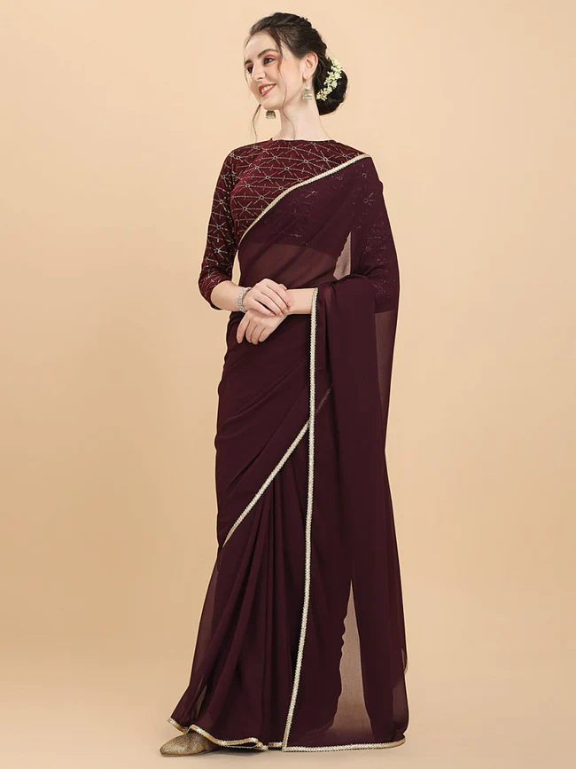
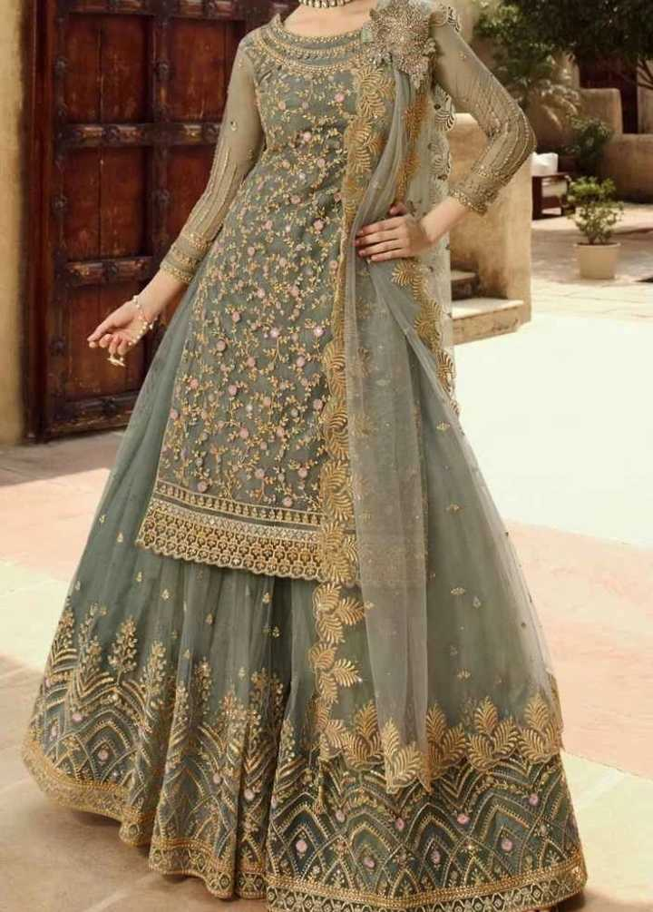
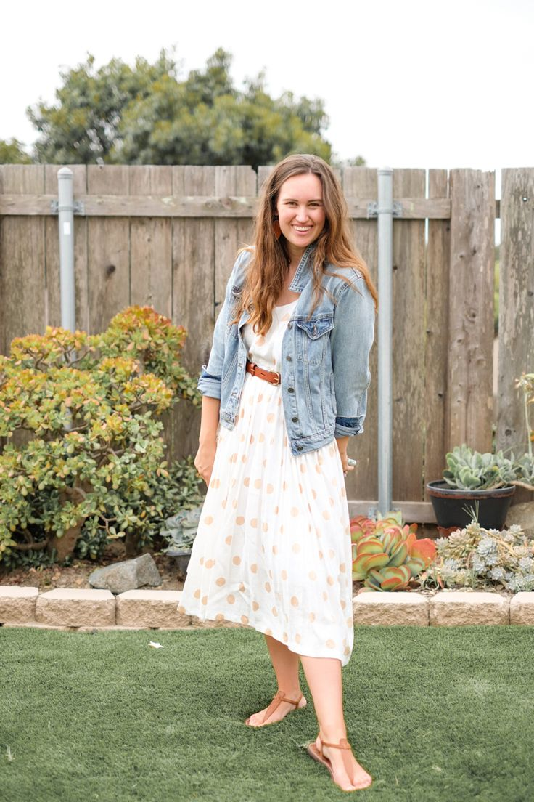

WOMEN'S WEAR

The above picture shows the Women's wear counter of the mall.
In the women's we are having all styles of wears.
All styles of occasions wear are available.
BELOW ARE THE TYPES OF WOMEN'S WEAR
|  | This is the traditional wear of the women's. |
|  |
This is the function wear of the women's. |
|  |
This is the Party wear of the women's. |